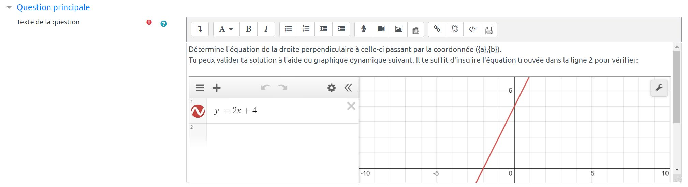

La question « formules avec démarche » permet à l'enseignant d'administrer une épreuve
en format
numérique qui contient des questions nécessitant l'évaluation des démarches. Ce type de question
permet la prise de photo directe par le biais de n'importe quel type de dispositif courant
(ordinateur portable, Chromebook, tablette, appareil mobile). L'élève a aussi la possibilité de
joindre un fichier. Une table de valeurs génère des nombres aléatoires présentés aux élèves.
Chaque élève reçoit donc une version unique de l'épreuve. La table de valeurs assure l'équité à
travers le jeu de valeurs aléatoires. Une formule mathématique est appliquée
afin de fournir à l'élève et à l'enseignant la bonne réponse attendue. Le problème peut contenir
plusieurs étapes. La rétroaction automatisée regénère le jeu de valeurs afin de renseigner la
démarche attendue. La correction de la question est manuelle et l'évaluateur peut fournir un
commentaire en format texte ou audio.
Nous espérons que ce type de question puisse contribuer à l'équité entre les élèves présents en
classe et ceux qui sont à la maison lors d'une évaluation.
La question formule avec démarche du RÉCIT est inspirée de la question formulas pour la création
des champs mathématiques.
Un bouton « Créer un exemple » a été placé en haut à droite. Cette action
engendre la complétion de tous les champs requis dans le but de rendre la question
fonctionnelle. Ces champs renseignés vous aideront à mieux comprendre le fonctionnement
et les particularités de de type de question.
Ce champ présente la question à l’élève. Les valeurs numériques sont remplacées par
des variables afin de rendre les nombres aléatoires. Les variables sont entourées par des
accolades.

Figure 1.1.a Exemple de question composée à l'aide de variables {a} et {b}.
Figure 1.1.b Les variables {a} et {b} sont présentées avec un jeu de valeurs -2 et
3.
1.2 Rétroaction générale
Ce champ contient une rétroaction qui sera lue par tous les étudiants après l'envoi de la
réponse. Il ne tient pas compte de la bonne réponse.
1.3 Note de la partie
Ce champ définit les points attribués à chaque partie du problème. La correction de la question
est manuelle. Le correcteur attribue le pointage correspondant à l'ensemble des
parties de la question incluant la démarche.
Figure 1.3. Le total de 7 points cumule les deux parties du problème ainsi que la
démarche.
1.4 Réponse
Ce champ contient la formule qui va permettre le calcul de la bonne réponse. Il assure la
fonction de « Clé de correction » pour l'enseignant afin de faciliter la correction de
la démarche. Il affiche également la
bonne réponse au participant après l'envoi de la tentative ou encore après la fin de l'épreuve.
La
formule est liée à une table des valeurs qui va générer les jeux de valeurs aléatoires. Les
variables a et b sont souvent utiliées à l'intérieur de la formule. Par exemple : a + b . Nous
vous invitons à
consulter le
didacticiel « Formules » afin de connaître les particularités d'écriture des
formules.
Figure 1.4. La bonne réponse correspond à la somme des valeurs a et b attribuées au
participant.
1.5 Unité
Ce champ ne contient aucun pointage. Il renseigne l'unité attendue.
Figure 1.5. Le champ retourne la bonne réponse attendue avec les unités.
1.6 Variables au hasard
Ce champ est automatiquement généré par la complétion de la table des valeurs. Par défaut, il
contient l'index de la table des valeurs.
Toutefois, des variations sont possibles. Un didicticiel de création du jeu de données est
disponible à la
section
« Premiers pas ».
Figure 1.6. La question possède trois jeux de réponses possibles : le jeu de
réponses 0, 1 ou 2. La figure 1.5 contient le jeu de valeurs en position 2 de la table
(selon la table des variables globales).
1.7 Variables globales
Ce champ est automatiquement généré par la complétion de la table de valeurs. Par défaut, il
contient les jeux de la table de valeurs.
Figure 1.7. La table contient trois jeux de valeurs. La colonne de droite affiche les réponses calculées.
1.8 Description de la démarche
Ce champ contient les informations de rétroaction relatives à la bonne réponse. Les variables
peuvent être réutilisées. Ces informations constituent la « Clé de correction » de
l'enseignant.
Figure 1.8.a. Texte de rétroaction avec des variables {a} et {b} insérées.
Figure 1.8.b. Affichage des valeurs à l'intérieur du champ « description de la démarche ».
1.9 Test d'instanciation des variables
Ce test est optionnel. Il peut s'avérer pratique lorsque les variables globales et variables au hasard ont été créés manuellement.
Figure 1.9. Validation de la question à l'aide d'instances de la table des valeurs.
2.0 Usage de la question par le participant
En plus de fournir la réponse numérique, le participant doit remettre sa démarche. L'éditeur
de texte offre les fonctions habituelles d'écriture et d'insertion d'images.
Prendre une photo
Le bouton « Prendre une photo » permet d'ajouter une image directement. Cette
action simplifie grandement la remise d'images à partir de la caméra ou de la webcam.
L'image capturée est directement retournée au serveur.
Figure 2.0. Le participant a déposé une photo prise à l'aide de son appareil mobile.
2.1 Fonctionnalités de la capture d'image
La capture d'image se réalise en trois étapes.
Figure 2.1.a. Saisie.
Figure 2.1.b. Découpe.
Figure 2.1.c. Enregistrement.
3.0 Correction de la question
Ce type de question nécessite une correction manuelle. Les champs de rétroaction (en jaune)
guident le correcteur. Il doit juger l'ensemble des réponses fournies ainsi que la
démarche pour ensuite inscrire le résultat ainsi que le commentaire. Le lien permettant la
correction se situe à droite du titre de test (engrenage bleu).
Figure 3.0. Évaluation manuelle des questions - Lien pour accéder aux copies des
participants.
3.1 Note et rétroaction au participant
L'eneignant peut fournir une rétroaction en format texte ou audio.
Figure 3.1. Correction manuelle de la question avec rétroaction audio.